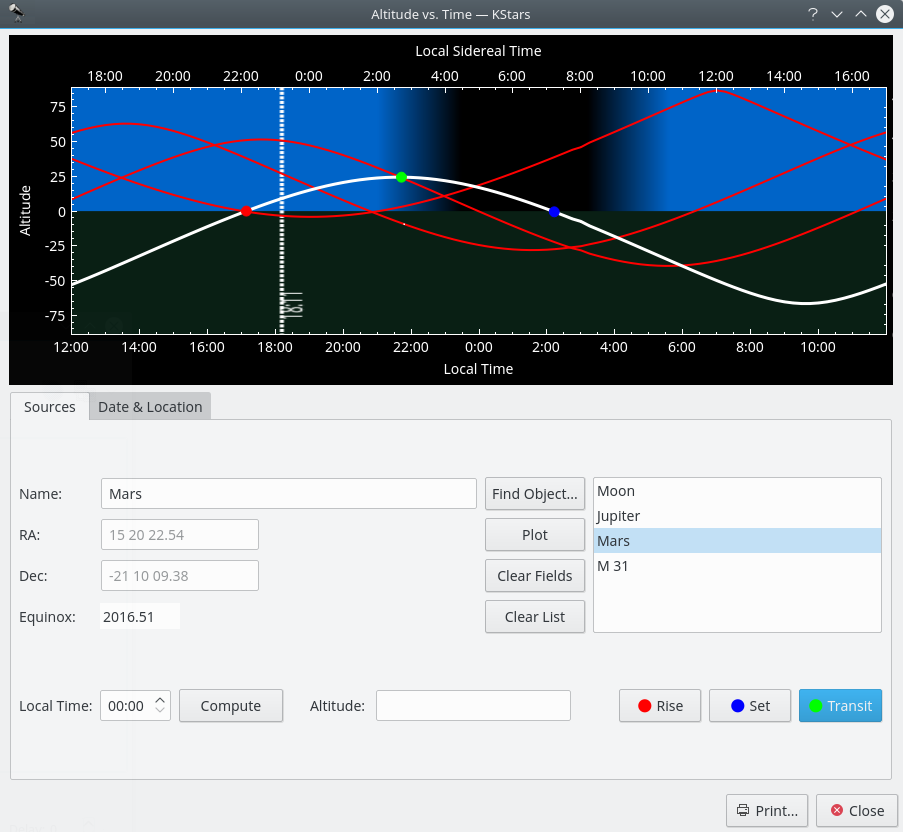

Altitude vs. Time Tool

This tool plots the altitude of any objects as a function of time, for any date and location on Earth. The top section is a graphical plot of altitude angle on the vertical axis, and time on the horizontal axis. The time is shown both as standard local time along the bottom, and sidereal time along the top. The bottom half of the graph is shaded green to indicate that points in this region are below the horizon.
There are a few ways to add curves to the plot. The simplest way to add the curve of an existing object is to simply type its name in the Name input field, and press Enter, or the Plot button. If the text you enter is found in the object database, the object's curve is added to the graph. You can also press the Find Object button to open the Find Object Window to select an object from the list of known objects. If you want to add a point that does not exist in the object database, simply enter a name for the point, and then fill in the coordinates in the RA and Dec input fields. Then press the Plot button to add the curve for your custom object to the plot (note that you have to pick a name that does not already exist in the object database for this to work).
When you add an object to the plot, its altitude vs. time curve is plotted with a thick white line, and its name is added to the listbox at the lower right. Any objects that were already present are plotted with a thinner red curve. You can choose which object is plotted with the thick white curve by highlighting its name in the listbox.
These curves show the objects' Altitude (angle above the horizon) as a function of time. When a curve passes from the lower half to the upper half, the object has risen; when it falls back to the lower half, it has set. For example, in the screenshot, the minor planet Quaoar is setting at around 15:00 local time, and is rising at about 04:00 local time.
The plot can be easily zoomed and panned using the mouse. The zooming level can be adjusted using the mouse scroll wheel. When the plot is zoomed out, the zooming level will be automatically limited to a default minimum value, such as the axes’ ranges are able to cover the entire plot (i.e. on vertical axis, the maximum altitude value should touch the top edge of the plot frame). The same principle is applied when the plot is panned using the mouse movement. For panning the plot, all you need to do is to click on the point of the plot you want to pan and then drag the mouse on your desired direction: left, right, up or down.
Another useful feature that Altvstime tool provides is its ability to compute and mark the Rise/Set/Transit times. This can be accomplished by a simple press of one of the Rise, Set or Transit buttons. When one of these buttons is pressed, a filled colored circle will be marked on the curve. The color used for Rise, Set and Transit dots are: red for Rise, blue for Set and green for Transit time. For a more intuitive way of using these buttons, they are marked with the color of their specific dots. This way, the user can easily understand the plot and make the association between a certain color and its significance.
Altvstime tool provides an easy way to find out the altitude of a sky-object at a certain moment of time using the Compute button. After you select the object from the Objects list and set the moment of time, the altitude can be computed by pressing the Compute button. But this is not the only way you can find out the altitude. Another method is to hover with mouse above one curve and thus, a tooltip containing the Local Time, Local Sidereal Time and Altitude will come up. This way, you can read the information in real time.
The Altitude of an object depends on both where you are on Earth, and on the Date. By default, the Tool adopts the Location and Date from the current KStars settings. You can change these parameters in the Date & Location Tab. To change the Location, you can press the Choose City... button to open the Set Geographic Location Window, or enter Longitude and Latitude values manually in the input fields, and press the Update button. To change the Date, use the spin and combo boxes, then press Update. Note that any curves you had already plotted will be automatically updated when you change the Date and/or Location.
Tip
Exercise:
Plot the Sun's Altitude curve. Make sure the geographic location is not near the equator. Change the Date to some time in June, and then again to sometime in January. You can see easily why we have seasons; in the winter, the Sun is above the horizon for less time (the days are shorter), and its altitude is never very high.